Brick, Cream, Ink, the Ripple, and owned Frederick photography form the recognition system. Functional colors organize a real topic or state; they never replace the shell or become separate page brands.
Working neutrals and text-safe Amber
Surface#FBF8F0
Paper Deep#EAE1D1
Border#D8CDBA
Control Border#927F63
Muted Ink#6C6357
Amber Text#925E16
Foundations
05 · Typography
Public Sans carries the product. Caslon is a rare signature.
The kit includes installable TTF files plus WOFF2 files. Install the Public Sans variable pair or the static compatibility set, not both.
Use Caslon for the wordmark and an occasional editorial or hero moment. Product page titles, cards, controls, labels, and data default to Public Sans.
Do not synthesize bold or italic. The supplied Caslon file is one upright Regular cut by design.
Public Sans · Variable upright and italic
Product titles, text, controls, and data
Current local information.
400Frederick County 0123456789
500Frederick County 0123456789
600Frederick County 0123456789
700Frederick County 0123456789
ABCDEFGHIJKLMNOPQRSTUVWXYZ · abcdefghijklmnopqrstuvwxyz · 00:00 11:11 123,456 Italic: Frederick County starts where you are.
Mobile roles shown at size
Caption · 11
Source note
Metadata · 13
Updated 8:42 AM
Body · 15
Useful detail
Reading · 16
Current conditions
Item title · 20
Baker Park
Page title · 32
Today
Ask RadiusInput · 16 px minimum
Desktop handoff: variable upright and italic. Compatibility set: 400, 500, 600, and 700 with matching italics. Map canvas labels use Mapbox cartographic type; Radius map controls remain Public Sans.
Foundations
06 · Product behavior
The interface should feel like a local field guide with useful live information.
01
State the scope.
Use the location or town someone chose. Do not quietly substitute a rough network location for a named place.
02
Lead with the current fact.
Show the useful place, condition, event, or service before a count, label, or pitch.
03
Show why it is trustworthy.
Keep the source, checked time, and a material uncertainty with the live claim.
04
Offer one honest next move.
A control says what will happen next and never promises a capability the product does not have.
Product system
07 · Surfaces and motion
Cream is the normal canvas.
Cards use Surface. Paper Deep groups quiet material. Thin rules and restrained shadows do more work than a stack of inflated containers.
160 ms response240 ms transition420 ms reveal
Use sparingly
Ink frames create contrast moments, not a default dark theme.
Oversized Ripple arcs belong on one high-value surface.
Motion explains a state change or spatial relationship.
Reduced-motion users receive the same information.
Beer, Live conditions, All tools, and the rest of the product keep one identity. Beer may use Ochre for taste selections, flagship markers, and beer metadata, but its page remains Cream, Ink, Brick, photography, and ruled paper.
Product system
08 · Photography
Use a recognizable Frederick photograph without recoloring it.
Photography joins Brick, Cream, Ink, and the Ripple in the recognition system. It should provide local evidence, not a campaign effect.
Approved example · Natural color
Market Street, downtown Frederick, with the clock tower, water tower, and ridge.
Owned Frederick Radius photograph. Crop for the subject; do not add a brand-color overlay.
Photography
09 · System in use
The same hierarchy supports a daily view, a question, and a map.
Current 390 px product captures, July 22, 2026. The examples show the interface contract; time-sensitive content will change.
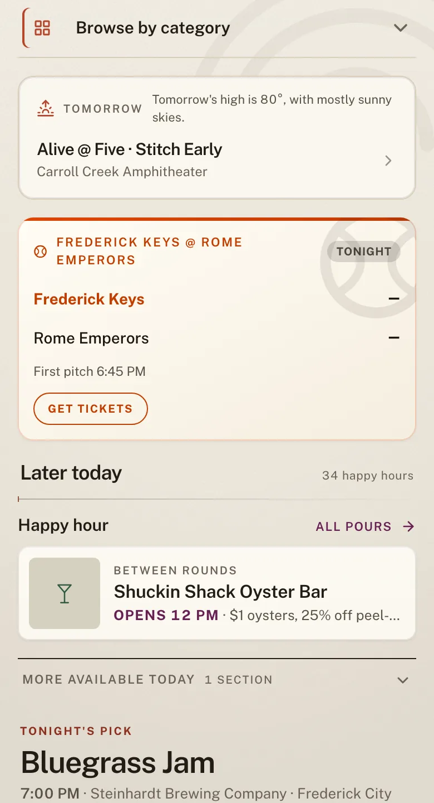
Today
Edited hierarchy
The next useful item leads. Time, place, and status stay attached to it. A disclosure holds the rest.
Public Sans carries product titles, facts, labels, and actions. Caslon is reserved for an occasional editorial moment.
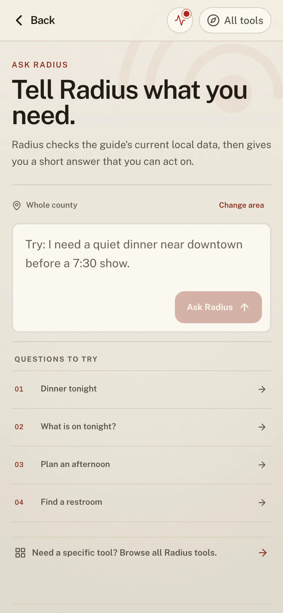
Ask Radius
Scope before answer
The chosen area appears before the question. Brick identifies the primary action; example questions remain quiet rows.
Search finds a known item. Ask Radius gives a sourced answer or builds a plan around constraints.
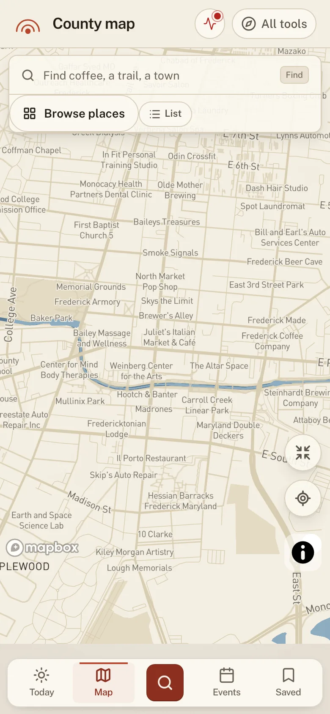
County map
Place stays legible
The warm base map is quiet enough for streets, water, controls, and attribution to remain clear.
The Ripple and Cream shell identify Radius. Creek organizes spatial information without becoming a new brand.
Product system · Current UI
09 · System in use
Recognition stays fixed while functional color explains the subject.
Brick, Cream, Ink, and the Ripple make the interface recognizably Radius. Supporting colors carry information; they are not sub-brand palettes.
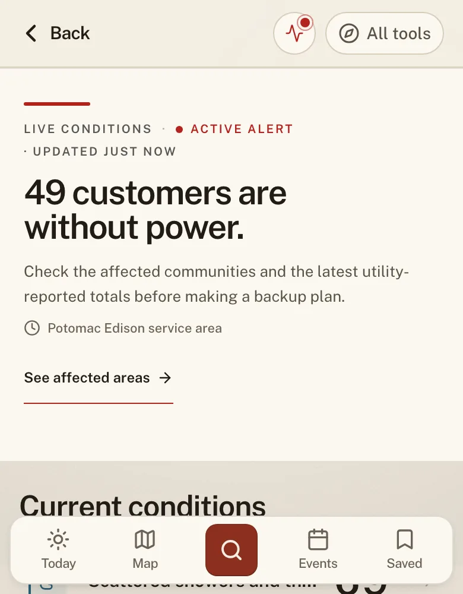
Live conditions
Trust beside the claim
Brick marks urgency. Creek structures live systems. Update time and source stay next to the fact they support.
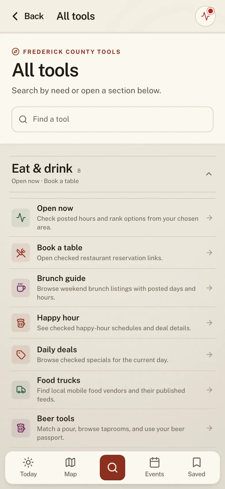
All tools
Tools remain one system
The same Public Sans hierarchy, row disclosure, Cream ground, and stable navigation hold a large directory together.
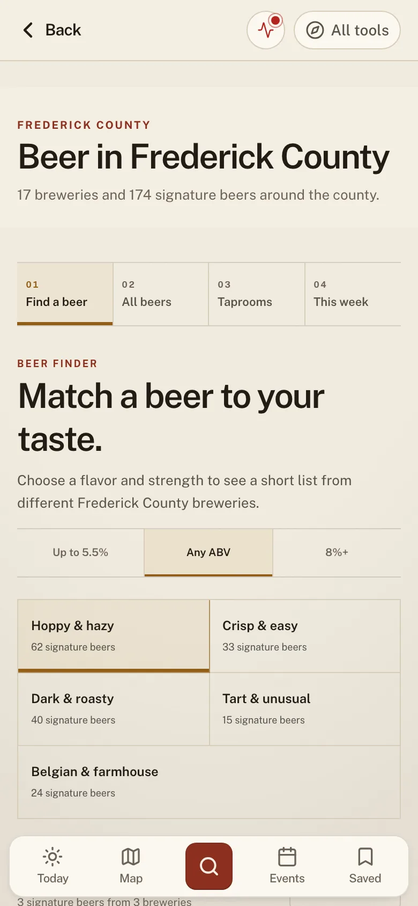
Beer
Subject, not sub-brand
Ochre describes beer color, choices, and metadata. It does not replace the normal shell, type, or disclosure rules.
01 · Scope
Start from a chosen area.
Name the town, county, or user-selected location before ranking nearby results.
02 · Trust
Show source and freshness.
Keep them with the live claim instead of hiding them in a separate methodology page.
03 · Action
Lead to the next useful step.
Make the main action clear and keep secondary detail behind an honest disclosure.
The map is part of the identity because Radius is about place.
Keep the base map warm and quiet until someone selects a layer or place.
Show useful context with a selected marker. A bare pin is not an answer.
Attach source and freshness to live information.
Keep countywide context without making downtown the center of every answer.
Trust rule
Never imply government endorsement. Official data keeps its source label, time, and direct link.
Creek · civicCatoctin Forest · outdoors/openPlum · culture
Maps and data
11 · Voice
Write like a careful local editor.
Be specific and complete.
Name the place, town, date, distance, source, or condition when it helps someone decide. Explain uncertainty plainly.
Prefer
This paved loop is 1.2 miles and has parking near the trailhead.
Do not perform intelligence.
Avoid generic slogans, repeated fragments, artificial groups of three, and invented personal experience.
Avoid
The path bends; the answer is yes.
Voice
12 · Social system
The campaign language can be bolder than the product.
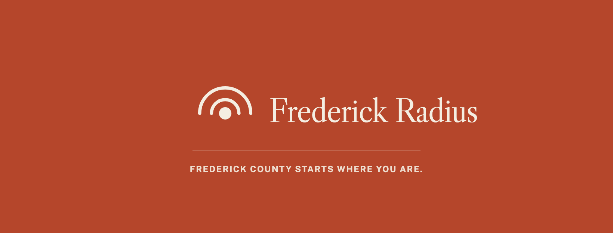
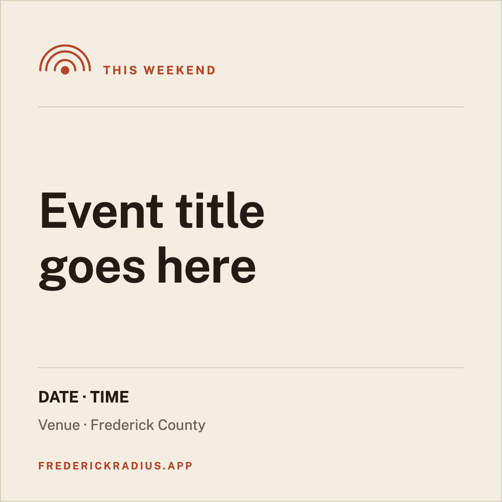
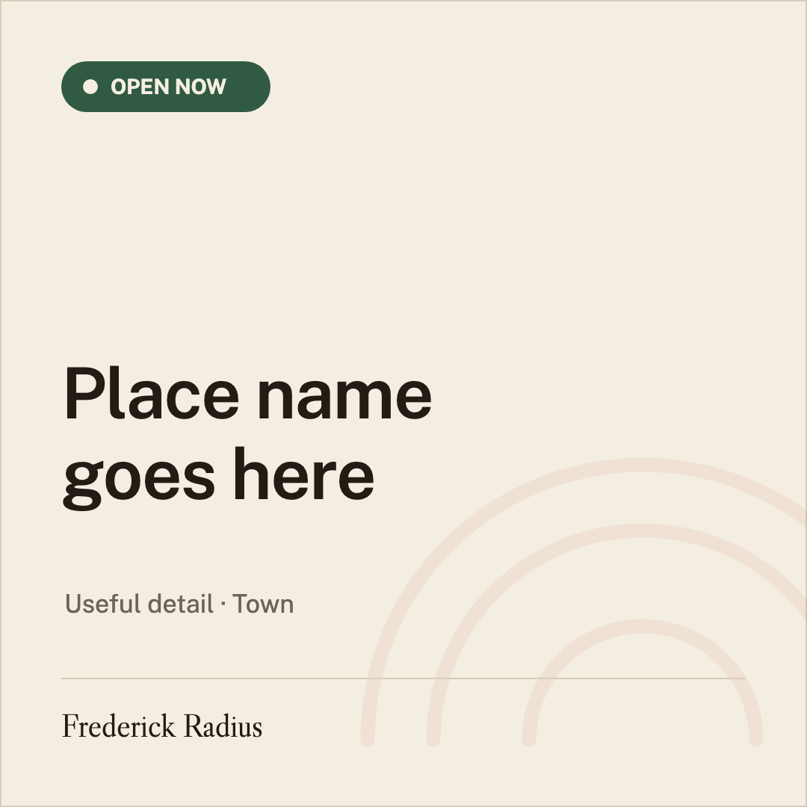
Brick carries brand messages. Cream carries events and public information. Catoctin Forest marks open. Ochre Amber is reserved for something live, time-sensitive, sun-related, or specifically about beer.
Social and campaign
13 · Asset kit
The working kit includes editable masters and ready-to-use exports.
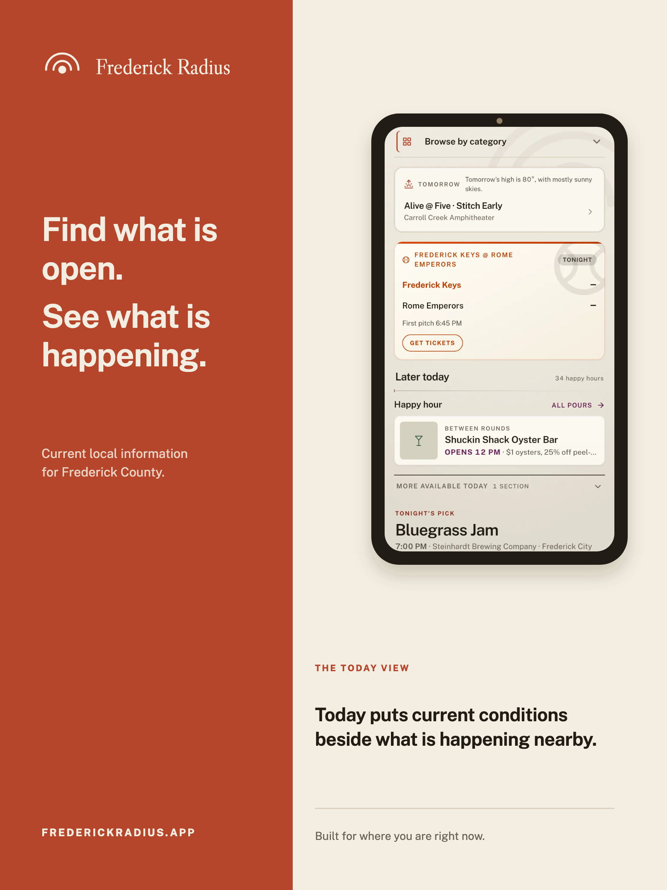
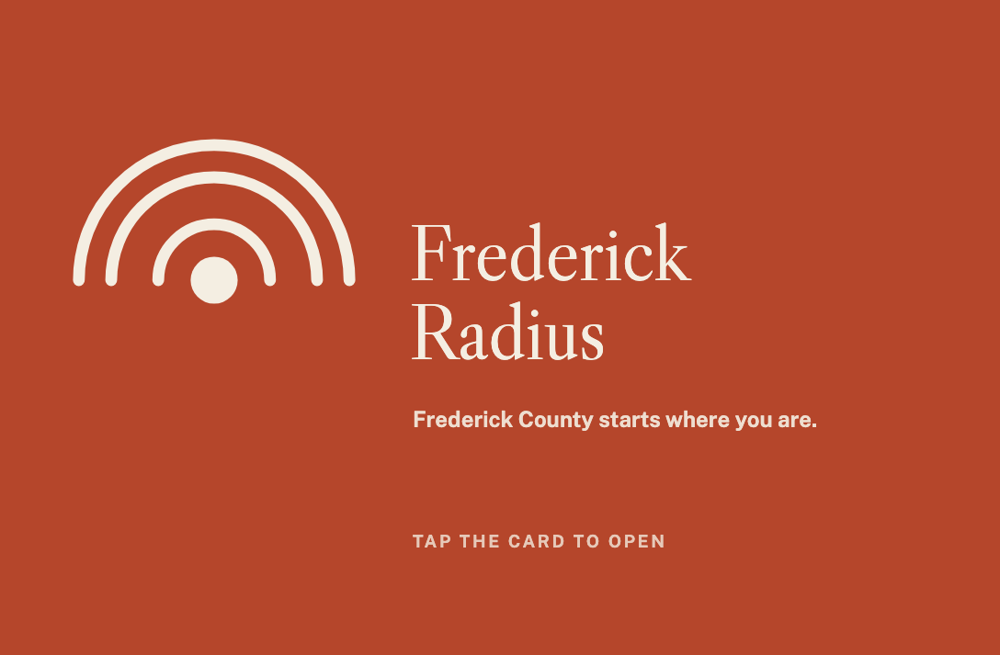
Identity · 13
Seven optical-size marks and six horizontal or stacked lockups, each supplied as SVG and PNG.
Social · 11
Circle-safe avatar, two Facebook covers, feed and story formats, photography templates, and Open Graph.
Posters · 4
Two photography-led posters plus current-UI posters for Today and Ask Radius.
NFC · 4
General and partner CR80 card fronts and backs, with tested-QR and URL fallbacks.
The 32 source assets ship with matching PNG exports. Font files, licenses, tokens, the manifest, the PDF, and NFC production guidance complete the handoff. Rebuild it with npm run build:brand.
Asset library
14 · Platform delivery
The icon, installed app, notifications, and share cards use one contract.
Launcher family
Standard 192 and 512 px icons use the Brick squircle with a centered Ripple and clear breathing room. Maskable artwork is full bleed. Apple uses an opaque 180 px tile.
The browser favicon uses one arc at 16, 32, and 48 px. Android notifications use the launcher plus a monochrome 72 px status badge.
Share and cache rules
Installed-app chrome and splash backgrounds use Cream.
The default site and beta cards use Brick; information cards use Cream.
The normal Open Graph image is 1200 by 630; story output is 1080 by 1920.
Bump the icon version after artwork changes so caches request new files.
Put the date in any time-specific share URL so yesterday's image cannot be reused.
The source of truth is src/lib/brand.ts. Product tokens mirror it in src/app/globals.css. Asset exports are rebuilt with npm run build:brand.
Release check
Rebuild the brand kit, icons, and PDF. A local export is not live. Commit and deploy it, then review the public manifest, icon URLs, splash, default share card, and a new uncached page.